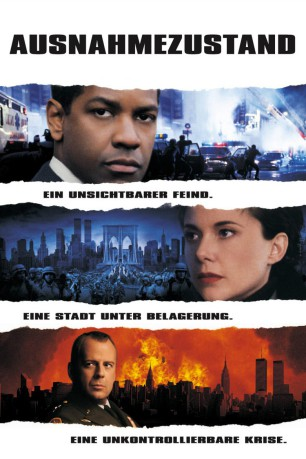

#137 Ausnahmezustand
Alternativ: The Siege
 
 IMDB-Wertung: 6.3 / 10
IMDB-Wertung: 6.3 / 10  Metascore: 53
Metascore: 53 
Nach der Entführung eines irakischen Scheichs durch die Amerikaner, wird New York von Bombenattentaten islamischer Fanatiker erschüttert. Das FBI, hier vertreten durch den Agenten Hubbard hat große Mühe, die Angelegenheit unter Kontrolle zu bringen, da er sich gleichzeitig auch noch mit der CIA auseinandersetzen muß.Als die Situation zu eskalieren droht, wird über New York, speziell Brooklyn, der Ausnahmezustand ausgerufen und das Militär übernimmt die Stadt. Durch das radikale Vorgehen gegen alle möglichen Ausländer des verdächtigen Kulturkreises wird die Stadt mehr und mehr zu einem Hexenkessel.
Jahr: 1998
Dauer: 116 Minuten
FSK: 16
Land: USA Studio: 20th Century FoxTonspuren:
Untertitel:
Auflösung: 1080p (1920×816) Größe: 7976 MB
Genre: Action, Thriller
Regisseur:  Edward Zwick
Edward Zwick
Drehbuch: Lawrence Wright, Lawrence Wright, Menno Meyjes, Edward Zwick
Soundtrack: Graeme Revell
Darsteller:
 Denzel Washington als Anthony 'Hub' Hubbard
Denzel Washington als Anthony 'Hub' Hubbard Annette Bening als Elise Kraft / Sharon Bridger
Annette Bening als Elise Kraft / Sharon Bridger Bruce Willis als Major General William Devereaux
Bruce Willis als Major General William Devereaux Tony Shalhoub als Agent Frank Haddad
Tony Shalhoub als Agent Frank Haddad Sami Bouajila als Samir Nazhde
Sami Bouajila als Samir Nazhde Mark Valley als FBI Agent Mike Johanssen
Mark Valley als FBI Agent Mike Johanssen- Jack Gwaltney als Fred Darius
 David Proval als Danny Sussman
David Proval als Danny Sussman Lance Reddick als FBI Agent Floyd Rose
Lance Reddick als FBI Agent Floyd Rose William Hill als INS Uniform
William Hill als INS Uniform Aasif Mandvi als Khalil Saleh
Aasif Mandvi als Khalil Saleh Wood Harris als Officer Henderson
Wood Harris als Officer Henderson David Costabile als Fingerprint Expert
David Costabile als Fingerprint Expert- Glenn Kessler als Fiber Expert
- Joey Naber als Rashad
 Said Faraj als Sleeper terrorist
Said Faraj als Sleeper terrorist Ali Afshar als Ali Wiziri, #87 Bus Bomber
Ali Afshar als Ali Wiziri, #87 Bus Bomber Ben Shenkman als INS Agent Howard Kaplan
Ben Shenkman als INS Agent Howard Kaplan Neal Jones als NYPD Representative
Neal Jones als NYPD Representative Donna Hanover als District Attorney
Donna Hanover als District Attorney- Hany Kamal als Arab Spokesman
- Chip Zien als Chief of Staff
 Dakin Matthews als Senator Wright
Dakin Matthews als Senator Wright John Rothman als Congressman Marshall
John Rothman als Congressman Marshall- John Henry Cox als Speaker of the House
- E. Katherine Kerr als Attorney General
 Will Lyman als FBI Director
Will Lyman als FBI Director Victor Slezak als Colonel Hardwick, Army Intelligence
Victor Slezak als Colonel Hardwick, Army Intelligence Chris Messina als Corporal
Chris Messina als Corporal- Amro Salama als Tariq Husseini, Auto Shop Owner
 Matt Servitto als Journalist #1
Matt Servitto als Journalist #1 Susie Essman als Protest Speaker
Susie Essman als Protest Speaker- Rory J. Aylward als Lieutenant
- Arianna Huffington als Capitol Week Pundit
- John F. Beard als Newscaster
- Mary Alice Williams als Newscaster
 Michael Arthur als Army Major , uncredited
Michael Arthur als Army Major , uncredited- Anthony Batarse als Terrorist , uncredited
- Scott Charles als Fireman , uncredited
- Christian Chase als Prisoner , uncredited
 Bill Clinton als Himself , archive footage, uncredited
Bill Clinton als Himself , archive footage, uncredited- Gerard Cordero als Hostage , uncredited
- Sean Patrick Folster als Arab , uncredited
 Mark A. Langston als Terrorist , uncredited
Mark A. Langston als Terrorist , uncredited- Tom Malloy als Lt. Muckley , uncredited
- Lisa Masters als Reporter #2 , uncredited
- Trish McGettrick als FBI Agent , uncredited
 John Meier als Soldier with Devereaux in base , uncredited
John Meier als Soldier with Devereaux in base , uncredited- George F. Miller als Soldier / Humvee Driver , uncredited
- Luis Moro als Hubbard FBI Decoy , uncredited
Datei: X:\1998\Ausnahmezustand (1998, FSK16, 1920x816).mkv seit 13.02.2015
Festplatte: HD 1996-2002
 Es gibt insgesamt 86 Filme in der Gruppe '1998'
Es gibt insgesamt 86 Filme in der Gruppe '1998'